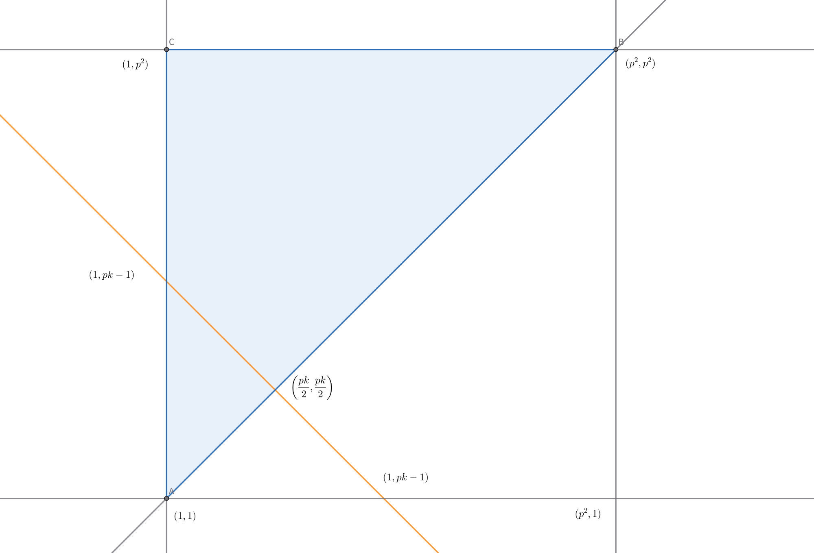
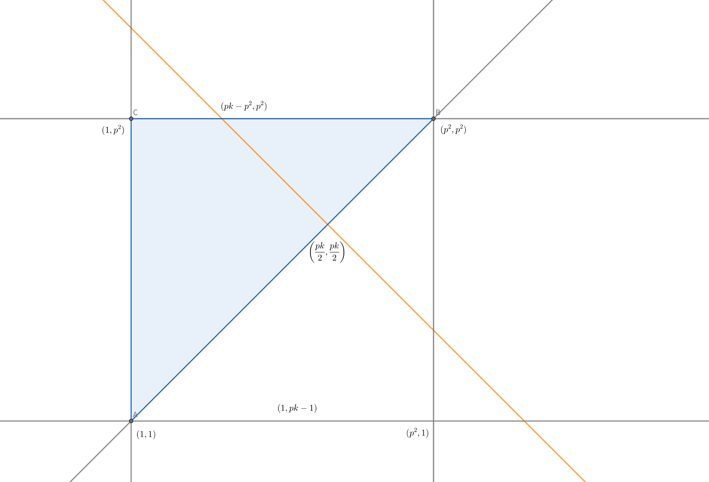

Candy Distribution
問題
問題情報
参考: AtCoder Beginner Contest 105 D
難易度: 4~5 / 5
解説
(1)
\(L\)以上\(R\)以下の整数の総和を\(S\)とする。
\( a_k = L + k - 1, b_k = R + 1 - k \)とすると、\( a_k + b_k = L + R \)
\(L\)以上\(R\)以下の整数は\( R - L + 1 \)個あるので、
$$ S = L + (L+1) + \dots + (R-1) + R = \sum_{k=1}^{R-L+1} a_k \cdots (I)$$
$$ S = R + (R-1) + \dots + (L+1) + L = \sum_{k=1}^{R-L+1} b_k \cdots (II) $$
\((I)+(II)\)から、
$$ 2S = \sum_{k=1}^{R-L+1} a_k + \sum_{k=1}^{R-L+1} b_k
= \sum_{k=1}^{R-L+1} ( a_k+b_k ) = \sum_{k=1}^{R-L+1} (L+R) $$
よって、$$ S = \dfrac{\sum_{k=1}^{R-L+1} (L+R)}{2} = \dfrac{(R-L+1)(L+R)}{2} $$
※等差数列の和の公式の使用を禁止し忘れてしまったので公式を使っていてもよいものとします。
(2)
\(p(p^2-p+2)\)
\(1\leqq l\leqq r\leqq p^2\)とし、\(l\)以上\(r\)以下の整数の総和を\(S(l,r)\)とする。
また、正の整数\(a\)が2以上の整数\(b\)で割り切れることを\(b \mid a\)と表すこととする。
(1)から、\(S(l,r) = \dfrac{(r-l+1)(l+r)}{2}\)
\(p\)は奇素数だから、\( p \mid S(l,r) \iff p \mid (r-l+1) \vee p \mid (l+r)\)
\(p \mid (r-l+1)\)を満たす\((l,r)\)の組の集合を\(A\)、\(p \mid (l+r)\)を満たす\((l,r)\)の組の集合をBとすると、
$$ f(p^2,p) = n(A\cup B) = n(A) + n(B) - n(A\cap B)$$
(ここまでで10点)
1. \(n(A)\)を求める [部分点:25点]
\(1\leqq r-l+1\leqq p^2 - 1 + 1 = p^2\)から、
\(p \mid (r-l+1) \iff r-l+1 = pk(k = 1,2,3,\cdots ,p)\)
すなわち\(r = l + pk - 1\)
\(1\leqq l\leqq r\)は常に成り立つので、\(r\leqq p^2\)であればよい。
よって、\(l\leqq p^2-pk+1\)
したがって、\(k\)を固定したとき、\(l=1,2,3,\cdots,p^2-pk+1\)に対して\(1\leqq l \leqq r\leqq p \wedge r-l+1 = pk\)を満たす\(r\)がただ一つ存在するので、
これを満たす組\((l,r)\)の個数は\(p^2-pk+1\)個。
よって、 $$ n(A) = \sum_{k=1}^{p} (p^2-pk+1) $$
2. \(n(B)\)を求める [部分点:25点]
\(p\)は奇素数で、\(l+r\leqq p^2+p^2 = 2p^2\)から、\(p \mid (l+r) \iff l+r = pk(k=1,2,3,\cdots, 2p)\)
(i) \(k\leqq p\)のとき
\(k\)を固定して考える。
\(lr\)平面上で、\(l,r\)を実数に拡張したとき\(1\leqq l\leqq r\leqq p^2\)を満たす点\((l,r)\)の存在範囲は上図の三角形ABCの周および内部で、 \(l,r\)は整数で\(l+r=pk\)を満たすので、求める個数は上図のオレンジの直線(直線\(l+r=pk\))と三角形ABCの周または内部の共通部分に含まれる格子点の個数である。
条件を満たす格子点の\(l\)座標は図より\(1\leqq l\leqq \dfrac{pk}{2}\)であるので、その個数は\(\left\lfloor\dfrac{pk}{2}\right\rfloor\)個。
(ii) \(k \gt p\)のとき
\(k\)を固定して考える。
\(lr\)平面上で、\(l,r\)を実数に拡張したとき\(1\leqq l\leqq r\leqq p^2\)を満たす点\((l,r)\)の存在範囲は上図の三角形ABCの周および内部で、 \(l,r\)は整数で\(l+r=pk\)を満たすので、求める個数は上図のオレンジの直線(直線\(l+r=pk\))と三角形ABCの周または内部の共通部分に含まれる格子点の個数である。
条件を満たす格子点の\(l\)座標は図より\(pk-p^2\leqq l \leqq \dfrac{pk}{2}\)であるので、その個数は\(\left\lfloor\dfrac{pk}{2}\right\rfloor - p(k-p) + 1\)(個)。
(i),(ii)から、$$ n(B) = \sum_{k=1}^p \left\lfloor\dfrac{pk}{2}\right\rfloor + \sum_{k=p+1}^{2p} \left\{ \left\lfloor\dfrac{pk}{2}\right\rfloor - p(k-p) + 1 \right\} = \sum_{k=1}^{2p} \left\lfloor\dfrac{pk}{2}\right\rfloor + \sum_{k=p+1}^{2p} (p^2-pk+1) $$
3. \(n (A\cap B)\)を求める [部分点:25点]
補題1. \(m\)が1より大きい奇数のとき、以下が成立する。 \( \left\{\begin{aligned}x\equiv 0(\mod m)\cdots (i)\\ y\equiv 0(\mod m)\cdots (ii) \end{aligned}\right. \iff \left\{\begin{aligned}x+y\equiv 0(\mod m)\cdots (iii)\\ x-y \equiv 0(\mod m)\cdots (iv) \end{aligned}\right. \)
補題1-a. \(m\)が1より大きい奇数のとき、以下が成立する。 \( \left\{\begin{aligned}x\equiv 0(\mod m)\cdots (i)\\ y\equiv 0(\mod m)\cdots (ii) \end{aligned}\right. \implies \left\{\begin{aligned}x+y\equiv 0(\mod m)\cdots (iii)\\ x-y \equiv 0(\mod m)\cdots (iv) \end{aligned}\right. \)
補題1-aの証明. \((i)+(ii)\),\((i)-(ii)\)から、(iii),(iv)が従う。■
補題1-b. \(m\)が1より大きい奇数のとき、以下が成立する。 \( \left\{\begin{aligned}x+y\equiv 0(\mod m)\cdots (iii)\\ x-y \equiv 0(\mod m)\cdots (iv) \end{aligned}\right. \implies \left\{\begin{aligned}x\equiv 0(\mod m)\cdots (i)\\ y\equiv 0(\mod m)\cdots (ii) \end{aligned}\right.\)
補題1-bの証明. 補題1-aの(※2025/12/20追加)\(x\)を\(x+y\),\(y\)を\(x-y\)に置き換えると、\(\left\{\begin{aligned}2x\equiv 0(\mod m)\\ 2y\equiv 0(\mod m)\end{aligned}\right.\)
2と\(m\)は互いに素だから、(i),(ii)が従う。■
補題1の証明. 補題1-a,1-bから、補題1は示された。■
\( p \mid (r-l+1) \wedge p \mid (l+r) \iff r-l+1\equiv0(\mod p)\wedge l+r\equiv0(\mod p)\)
\(p\)は1より大きい奇数だから、補題1より、
$$ \left\{\begin{aligned}r-l+1\equiv0(\mod p) \\ l+r\equiv0(\mod p)\end{aligned}\right. \iff \left\{\begin{aligned}2r\equiv -1(\mod p) \cdots (I) \\ 2l\equiv 1(\mod p) \cdots (II) \end{aligned}\right. $$
pは素数だから2には逆元が存在するので、(I),(II)の両辺にそれぞれ\(\dfrac{p+1}{2}\)(\(p\)は奇数だからこれは整数である)をかけると、
$$ \left\{\begin{aligned}r\equiv -\dfrac{p+1}{2} \equiv -\dfrac{p+1}{2} + p = \dfrac{p-1}{2} (\mod p) \cdots (I)' \\ l\equiv \dfrac{p+1}{2} (\mod p) \cdots (II)' \end{aligned}\right. $$
を得る。
ここで、1以上\(p^2\)以下の\(p^2\)個の整数を小さいほうから\(p\)個ずつ区切りそれぞれを群と呼ぶこととすると、それぞれ\(p\)個の整数を含む群がちょうど\(p\)群できる。
各群において含まれる整数を小さい順に並べたとき、それらを\(p\)で割った余りは順に\(1,2,3,\cdots ,p-2,p-1,0\)である。
\(0\lt\dfrac{p-1}{2}\lt\dfrac{p+1}{2}\lt p\)であり、
(I)',(II)'から\(l\not\equiv 0(\mod p)\wedge r\not\equiv 0(\mod p)\)が成り立つので、\(l\leqq r\)から、\(l,r\)は異なる群に属す。
よって、組\((l,r)\)の総数は、\(p\)群から異なる2群を選び、群に含まれる最小の整数の小さいほうの群に含まれる整数であって\(p\)で割った余りが\(\dfrac{p+1}{2}\)であるもの(ただ一つ存在する)を\(l\)、
そうでない方の群に含まれる整数であって\(p\)で割った余りが\(\dfrac{p-1}{2}\)であるもの(ただ一つ存在する)を\(r\)とする選び方の数と等しいので、\(_p C _2\)個である。
したがって、\(n(A\cap B) = _p C _ 2 = \dfrac{1}{2} p (p-1)\)
4. 計算する [部分点:20点]
\(p\)は奇数なので、 $$ \sum_{k=1}^{2p} \left\lfloor\dfrac{pk}{2}\right\rfloor = \sum_{k=1}^{2p} \left\lfloor\dfrac{(p-1)k}{2}+\dfrac{k}{2}\right\rfloor = \sum_{k=1}^{2p} \left(\dfrac{(p-1)k}{2} + \left\lfloor\dfrac{k}{2}\right\rfloor \right)$$ よって、 $$ f(p^2,p) = n(A\cup B) = n(A) + n(B) - n(A\cap B) $$ $$ = \sum_{k=1}^{p} (p^2-pk+1) + \sum_{k=1}^{2p} \left\lfloor\dfrac{pk}{2}\right\rfloor + \sum_{k=p+1}^{2p} (p^2-pk+1) - \dfrac{1}{2} p (p-1) $$ $$ = \sum_{k=1}^{2p} (p^2-pk+1) +\sum_{k=1}^{2p} \left(\dfrac{(p-1)k}{2} + \left\lfloor\dfrac{k}{2}\right\rfloor \right) -\dfrac{1}{2} p (p-1) $$ $$ = \sum_{k=1}^{2p} \left\{p^2+\left(-p+\dfrac{p-1}{2}\right)k+1\right\} + \sum_{k=1}^{2p}\left\lfloor\dfrac{k}{2}\right\rfloor -\dfrac{1}{2} p (p-1) $$ $$ = \sum_{k=1}^{2p} (p^2+1) - \dfrac{p+1}{2} \sum_{k=1}^{2p} k + \sum_{i=1}^{p} \left\lfloor\dfrac{2i-1}{2}\right\rfloor + \sum_{i=1}^{p} \left\lfloor\dfrac{2i}{2}\right\rfloor -\dfrac{1}{2} p (p-1) $$ $$ = 2p(p^2+1) - \dfrac{p+1}{2}\times \dfrac{2p(2p+1)}{2} + \sum_{i=1}^{p} (i-1) + \sum_{i=1}^{p} i - \dfrac{1}{2} p (p-1) $$ $$ = 2p(p^2+1) - \dfrac{p+1}{2}\times \dfrac{2p(2p+1)}{2} + \dfrac{p(p+1)}{2} - p + \dfrac{p(p+1)}{2} - \dfrac{1}{2} p (p-1) $$ $$ = \dfrac{p}{2} \{ 4(p^2+1) - (p+1)(2p+1) + (p+1) - 2 + (p+1) - (p-1) \} $$ $$ = \dfrac{p}{2} ( 2p^2 -2p + 4 ) $$ $$ = p(p^2-p+2) \cdots (答)$$
出題者コメント
場合分けが必要な整数問題でした。\(A\cap B\)の部分はmodの知識があると非常にスムーズに解くことができます。